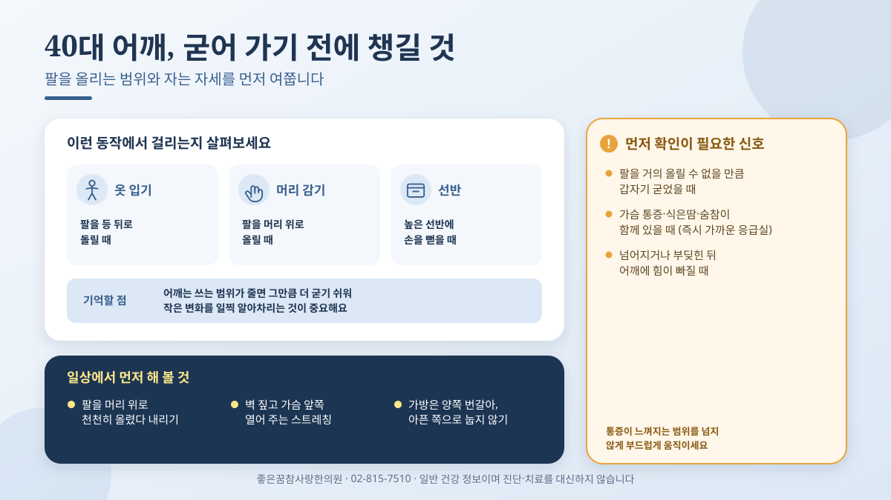

이종호 한의사 감수좋은꿈참사랑한의원 대표원장 (한의사 면허번호 19769)발행 2026-11-23 · 수정 2026-11-25
이 글의 차례
크게 아프지는 않지만 팔을 뒤로 돌려 옷을 입을 때나 높은 선반에 손을 뻗을 때 살짝 걸린다면, 지금이 생활을 돌아보기 좋은 시기입니다. 어깨는 쓰는 범위가 줄면 그만큼 더 굳기 쉬워 작은 변화를 일찍 알아차리는 것이 중요합니다.
왜 이런 불편이 생길 수 있나요
- 하루 대부분을 팔을 몸 앞에 두고 지내면 어깨를 크게 움직일 일이 줄어듭니다.
- 앉아서 어깨가 앞으로 말린 자세가 길어지면 어깨 앞쪽은 짧아지고 뒤쪽은 늘어진 채 긴장합니다.
- 한쪽으로만 가방을 메거나 한쪽으로 누워 자는 습관이 한쪽 어깨에 부담을 줍니다.
- 40~50대에는 뚜렷한 이유 없이 어깨가 서서히 굳는 경우도 있어 움직이는 범위의 변화를 지켜보는 것이 좋습니다.
굳어 가는 신호는 이렇게 구분해 보세요
- 단순한 뻐근함: 오래 앉아 있다 일어나면 뻐근하지만, 팔을 크게 돌리면 끝까지 올라갑니다.
- 범위가 줄어드는 신호: 등 뒤로 손을 돌려 잡을 때 예전보다 손이 덜 올라가거나, 머리를 감을 때 팔을 끝까지 올리기 어렵습니다.
- 밤의 불편: 아픈 쪽으로 누우면 깨거나, 밤에 쑤셔 잠이 얕아집니다.
- 양쪽 비교: 거울 앞에서 양팔을 앞으로, 옆으로 올려 보면 한쪽만 덜 올라가는지 알 수 있습니다.
자주 하는 오해
- 어깨가 뻐근하면 가만히 쉬어야만 한다고 여기기 쉽지만, 오래 움직이지 않으면 쓰는 범위가 더 줄 수 있어 아프지 않은 범위의 움직임은 이어 가는 편이 좋습니다.
- 세게 주무르면 빨리 풀린다고 생각하기 쉽지만, 강한 자극 뒤에 오히려 더 뻐근해지는 경우도 있습니다.
- 40대 어깨 불편은 모두 오십견이라고 단정하기 쉽지만, 힘줄, 목, 자세 습관 등 원인이 여러 가지라 동작을 확인해 봐야 구분할 수 있습니다.
- 아픈 쪽 팔만 쓰지 않으면 된다고 여기기 쉽지만, 반대쪽 팔과 목에 부담이 옮겨 가기도 합니다.
예를 들면 이런 경우입니다
- 예를 들어 하루 종일 마우스를 쓰는 40대 직장인이라면, 어깨가 앞으로 말린 자세가 길어 팔을 옆으로 올릴 때 걸리는지 확인하고, 업무 중 한 시간에 한 번 팔을 머리 위로 올리는 습관부터 함께 정합니다.
- 예를 들어 주말에 오랜만에 배드민턴이나 골프를 친 뒤 어깨가 뻐근해진 경우라면, 며칠 동안 팔이 올라가는 범위가 돌아오는지 보며 무리한 동작을 잠시 줄입니다.
- 예를 들어 늘 한쪽으로 누워 자는 분이라면, 아래쪽 어깨에 눌림이 쌓이지 않도록 팔 아래에 얇은 베개를 받치거나 반대쪽으로 바꿔 누워 봅니다.
- 예를 들어 아이를 자주 안아 올리는 40대 부모라면, 늘 같은 팔로 안는지 확인하고 양팔을 번갈아 쓰는 방법과 아이를 몸에 붙여 드는 요령을 함께 이야기합니다.
먼저 이렇게 여쭙니다
- 팔을 머리 위로 올리거나 등 뒤로 돌릴 때 걸리는 느낌이 있나요?
- 한쪽 어깨만 더 뻐근한가요, 양쪽이 비슷한가요?
- 자는 동안 어깨를 눌러 깨는 일이 있나요?
- 하루 중 팔을 크게 쓰는 시간은 얼마나 되나요?
- 예전에 어깨를 다치거나 치료받은 적이 있나요?
- 최근 새로 시작한 운동이나 무거운 물건을 드는 일이 있나요?
일상에서 먼저 해 볼 수 있는 것
- 하루에 몇 번 팔을 머리 위로 천천히 올렸다 내리는 동작 하기
- 벽에 손을 짚고 가슴 앞쪽을 열어 주는 가벼운 스트레칭 하기
- 한쪽 어깨에만 가방을 메지 않고 양쪽을 번갈아 쓰기
- 통증이 느껴지는 범위를 넘지 않게 부드럽게 움직이기
- 아픈 쪽으로 눕지 말고 팔 아래에 얇은 베개 받치기
- 모니터를 눈높이에 맞춰 어깨가 앞으로 말리지 않게 하기
스스로 점검해 보세요
- 등 뒤로 손을 돌려 잡을 때 한쪽이 덜 올라간다
- 머리를 감거나 옷을 입을 때 어깨가 걸린다
- 아픈 쪽으로 누우면 잠에서 깬 적이 있다
- 하루 대부분 팔을 몸 앞에 두고 일한다
- 가방을 늘 같은 쪽 어깨에 멘다
- 거울로 보면 한쪽 어깨가 앞으로 말려 있다
- 뻐근한 느낌이 2주 넘게 이어지고 있다
해당하는 항목이 있다면 진료 때 걸리는 동작을 직접 보여 주세요.
한의원에서 함께 살필 수 있는 경우
- 팔을 올릴 때 어깨 앞이나 옆이 걸리는 경우 어떤 동작에서 걸리는지 함께 살핍니다.
- 앉아서 일하는 시간이 길고 어깨가 앞으로 말리는 경우 자세와 근육의 긴장을 함께 살핍니다.
- 밤에 어깨가 뻐근해 잠이 얕아지는 경우 자는 자세와 수면 환경을 함께 살핍니다.
좋은꿈참사랑한의원에서는 팔을 앞, 옆, 뒤로 올리는 범위를 양쪽 비교하며 어느 방향에서 걸리는지 확인합니다. 필요하다고 판단될 때 초음파로 힘줄 상태를 보거나 침·약침·추나 등을 상태에 맞춰 정하고, 귀가 전에는 집에서 움직이는 범위를 지키는 동작을 알려 드립니다.
첫 방문에는 문진표를 쓴 뒤 원장이 언제부터, 어떤 동작에서 어깨가 걸리는지와 다친 적이 있는지를 여쭙고, 모든 분께 진맥을 짚습니다. 이어서 앞에서 말씀드린 대로 팔 올리는 범위를 양쪽 비교하고, 누르면 아픈 곳과 근력을 확인합니다. 오늘 할 치료와 이유를 먼저 설명드린 뒤 진행하며, 다음 진료에서는 지난번 걸리던 동작의 범위를 다시 비교합니다.
이렇게 기록해 오시면 상담이 쉬워집니다
- 팔이 걸리는 동작(옷 입기, 머리 감기, 선반에 손 뻗기 등)
- 밤에 어깨 때문에 깬 횟수
- 하루 중 팔을 크게 쓰는 시간
- 자주 쓰는 책상과 의자, 모니터 높이
- 최근 새로 시작한 운동이나 집안일
며칠 지켜보고, 언제 바로 확인하나요
- 오랜만의 운동이나 무리한 일 뒤에 생긴 뻐근함은 무리한 동작을 줄이고 1~2주 지켜볼 수 있습니다.
- 2주가 지나도 팔이 올라가는 범위가 줄어든 채 그대로이거나, 밤에 어깨 때문에 깨는 날이 늘어난다면 진료를 받아 보세요.
- 넘어진 뒤 팔을 들 수 없거나, 어깨 통증과 함께 가슴 통증·식은땀·숨참이 있다면 기다리지 말고 바로 응급실로 가세요.
이런 증상은 먼저 확인이 필요합니다
- 팔을 거의 올릴 수 없을 만큼 갑자기 굳은 경우
- 가슴 쪽 통증이나 식은땀, 숨참이 어깨 통증과 함께 있는 경우(즉시 응급실)
- 넘어지거나 부딪힌 뒤 어깨에 힘이 빠지는 경우
복용 중인 약은 처방한 의사와 상의 없이 줄이거나 끊지 않습니다.
함께 읽으면 좋은 글
- 팔이 올라가지 않고 어깨가 굳어 갈 때(오십견)는 일상에서 무엇을 살피나요?
- 어깨가 아플 때 초음파로 무엇을 확인하고, 어떤 동작을 먼저 묻나요?
- 옆으로 누우면 어깨가 아파 잠을 설칠 때는 어떻게 하나요?

여쭙는 것
- 팔을 머리 위로 올리거나 등 뒤로 돌릴 때 걸리는 느낌이 있나요?
- 한쪽 어깨만 더 뻐근한가요, 양쪽이 비슷한가요?
- 자는 동안 어깨를 눌러 깨는 일이 있나요?
생활에서 해 볼 것
- 하루에 몇 번 팔을 머리 위로 천천히 올렸다 내리는 동작 하기
- 벽에 손을 짚고 가슴 앞쪽을 열어 주는 가벼운 스트레칭 하기
- 한쪽 어깨에만 가방을 메지 않고 양쪽을 번갈아 쓰기
한의원에서 함께 살필 것
- 팔을 올릴 때 어깨 앞이나 옆이 걸리는 경우 어떤 동작에서 걸리는지 함께 살핍니다.
- 앉아서 일하는 시간이 길고 어깨가 앞으로 말리는 경우 자세와 근육의 긴장을 함께 살…
- 밤에 어깨가 뻐근해 잠이 얕아지는 경우 자는 자세와 수면 환경을 함께 살핍니다.
먼저 확인이 필요한 신호
- 팔을 거의 올릴 수 없을 만큼 갑자기 굳은 경우
- 가슴 쪽 통증이나 식은땀, 숨참이 어깨 통증과 함께 있는 경우(즉시 응급실)
- 넘어지거나 부딪힌 뒤 어깨에 힘이 빠지는 경우
한눈에 보는 표
| 구분 | 핵심 |
|---|---|
| 여쭙는 것 | 팔을 머리 위로 올리거나 등 뒤로 돌릴 때 걸리는 느낌이 있나요? 한쪽 어깨만 더 뻐근한가요, 양쪽이 비슷한가요? |
| 생활에서 해 볼 것 | 하루에 몇 번 팔을 머리 위로 천천히 올렸다 내리는 동작 하기 벽에 손을 짚고 가슴 앞쪽을 열어 주는 가벼운 스트레칭 하기 |
| 한의원에서 함께 살필 것 | 팔을 올릴 때 어깨 앞이나 옆이 걸리는 경우 어떤 동작에서 걸리는지 함께 살핍니다. 앉아서 일하는 시간이 길고 어깨가 앞으로 말리는 경우 자세와 근육의 긴장을 함께 살핍니다. |
| 먼저 확인이 필요한 신호 | 팔을 거의 올릴 수 없을 만큼 갑자기 굳은 경우 가슴 쪽 통증이나 식은땀, 숨참이 어깨 통증과 함께 있는 경우(즉시 응급실) |
자주 묻는 질문
어깨가 굳기 전에 미리 운동을 해도 되나요?
통증이 없는 범위에서 천천히 팔을 움직이는 것은 흔히 권합니다. 아프면 멈추고 상담해 보시길 권합니다.
한 번 뻐근하면 계속 굳어 가나요?
그렇지 않은 경우도 많습니다. 다만 쓰는 범위가 줄어드는 느낌이 이어지면 동작을 확인해 보는 것이 좋습니다.
한의원에서는 무엇을 보나요?
팔을 올리고 돌리는 범위와 걸리는 방향, 자는 자세와 생활 습관을 함께 살핍니다.
어깨 스트레칭은 하루에 얼마나 하면 되나요?
정해진 횟수보다 통증이 없는 범위에서 하루 여러 번 나눠 천천히 하는 편이 부담이 적습니다. 아프면 멈추고 상담해 주세요.
찜질은 따뜻하게 하나요, 차갑게 하나요?
다친 직후 붓고 열이 나면 차갑게, 오래된 뻐근함에는 따뜻하게 하는 경우가 많습니다. 헷갈리면 진료 때 여쭤 주세요.
어깨가 뻐근할 때 운동을 계속해도 되나요?
통증이 심해지지 않는 범위라면 이어 가되, 팔을 머리 위로 크게 쓰는 동작은 잠시 줄이고 상담해 보시길 권합니다.
좋은꿈참사랑한의원은 재진 때 지난번 이야기부터 이어서 여쭙니다. 진료시간과 예약은 오시는 길에서 확인하세요.
어디서 상담받을 수 있나요?
좋은꿈참사랑한의원은 서울 동작구 만양로2길 2 신성빌딩 3층·5층(서울 동작구 상도동, 7호선 상도역 3번 출구 근처)에 있습니다. 한의사 3명(이종호 대표원장, 조영기 수석진료원장, 정원영 진료원장)이 진료합니다. 진료시간은 평일 09:30~20:00(점심 13:00~14:00), 토·일·공휴일 09:30~15:00이며, 방문 전 전화로 확인을 권합니다. 예약은 네이버 예약, 카카오톡 상담, 전화 02-815-7510로 받습니다.
이 글은 일반적인 건강 정보이며 개인의 진단이나 치료를 대신하지 않습니다. 증상이 있거나 복용 중인 약이 있다면 진료를 통해 확인하세요. 치료 효과는 개인마다 다를 수 있습니다.
작성 기준: 일반적으로 알려져 있는 건강 정보를 참고해 정리했습니다(대표원장 감수). 증상 기록은 1~2주 동안 하루 1회, 비슷한 시간에 적어 오시면 지난 상태와 비교하기 쉽습니다.